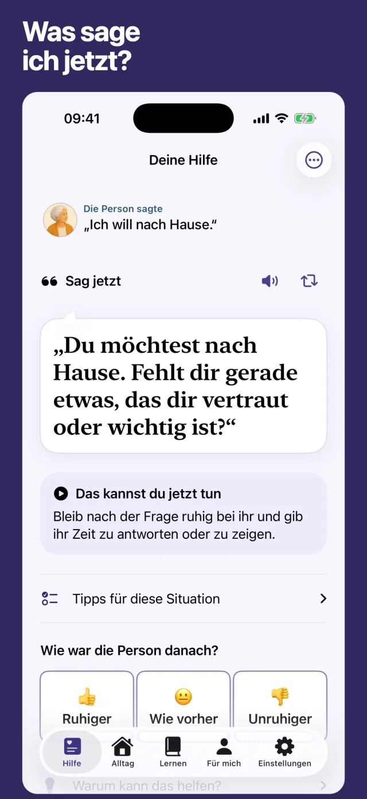
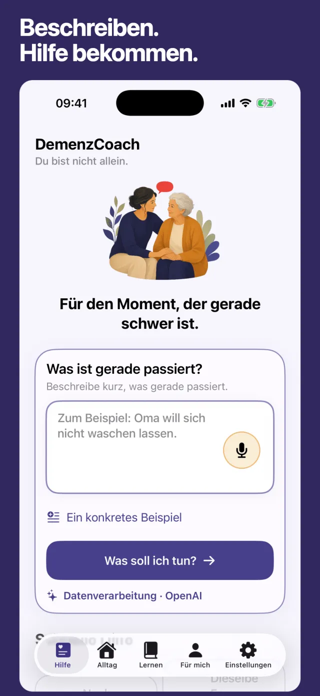
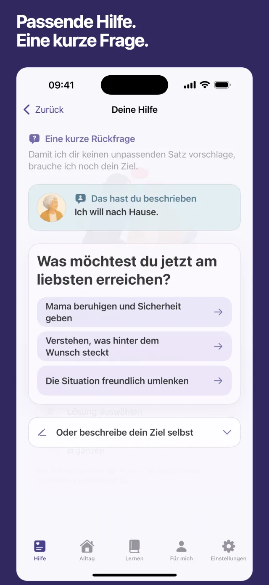
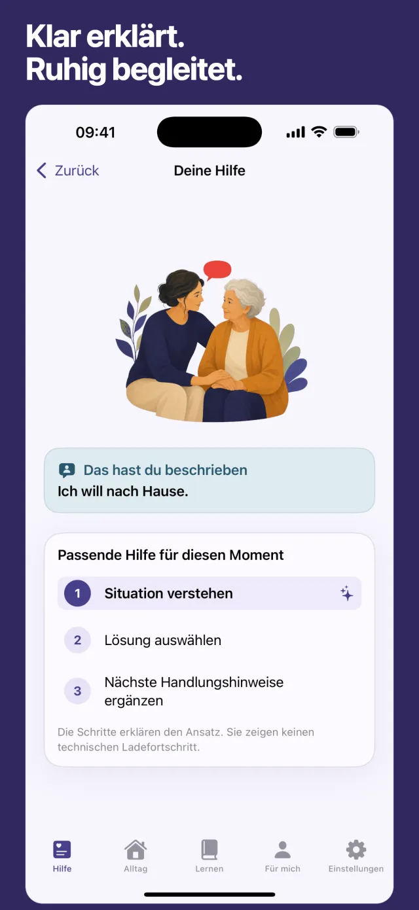
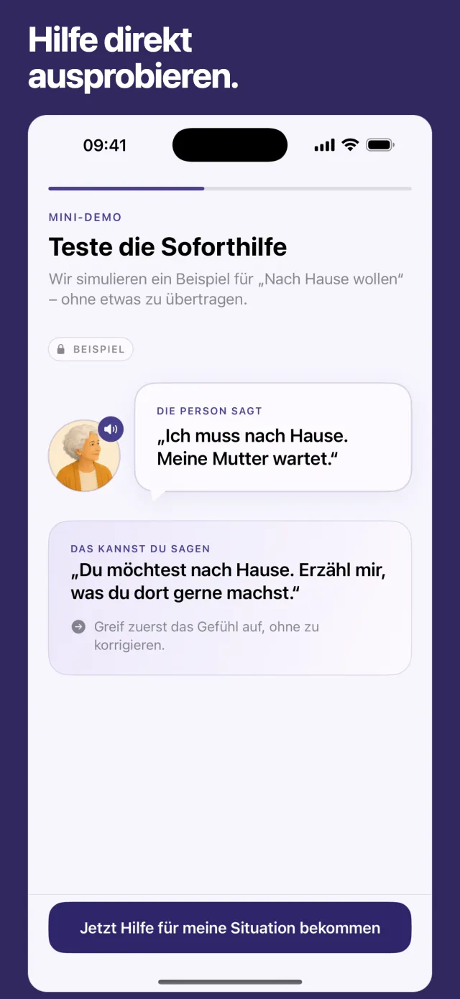

Deine Mutter, zum dritten Mal heuteIch will nach Hause.
Dabei ist sie zu Hause.
Was sage ich jetzt?
Beschreib der App kurz, was gerade passiert. Du bekommst einen ruhigen Satz, den du sofort sagen kannst, und einen kleinen nächsten Schritt.
- Auf Deutsch
- Für iPhone
- Kostenloser Download

So sieht die Hilfe in der App aus.
Das Beispiel stammt genau so aus der App, siehe den Screenshot oben.
- Die Person sagte
- „Ich will nach Hause.“
- Sag jetzt
- „Du möchtest nach Hause. Fehlt dir gerade etwas, das dir vertraut oder wichtig ist?“
- Das kannst du jetzt tun
- Bleib nach der Frage ruhig bei ihr und gib ihr Zeit zu antworten oder zu zeigen.
Danach fragt die App: Wie war die Person danach, ruhiger, wie vorher oder unruhiger? Was geholfen hat, berücksichtigt sie bei den nächsten Vorschlägen.
Vorschläge sind KI-generiert oder vorbereitet. Sie können unvollständig oder unpassend sein. Prüfe sie immer anhand der Person und der Situation.
Vier Schritte, die du in der App siehst.
-

Beschreib kurz, was passiert. Tippen oder sprechen.
-

Eine kurze Rückfrage, damit der Satz zu deinem Ziel passt.
-

Du siehst, was die App gerade tut, bevor der Satz erscheint.
-

Erst ausprobieren: Die Mini-Demo zeigt ein Beispiel, ohne dass du etwas eingibst.
Was dir im Alltag hilft.
- Direkte Hilfe für typische Momente. Nach Hause wollen, dieselbe Frage immer wieder, Unruhe am Abend, Körperpflege. Ein Tipp, und ein passender Satz ist offen.
- Sätze merken, vorlesen lassen, einsprechen. Hilfreiche Sätze findest du später schnell wieder. Du kannst die Situation auch einsprechen statt zu tippen.
- Kurze Lerneinheiten und ein 7-Tage-Plan. Für die ruhigen Minuten, wenn du verstehen willst, was hinter dem Verhalten stecken kann.
- Ein kurzer Check-in für dich. Weil pflegende Angehörige oft selbst erschöpft sind.
Gut zu wissen.
Kostet die App etwas?
Der Download aus dem App Store ist kostenlos. Zusätzliche Funktionen, die etwas kosten, zeigt dir die App mit Preis an, bevor du etwas kaufst.
Ist die App wirklich auf Deutsch?
Ja. Texte, Beispiele und vorgeschlagene Sätze gibt es auf Deutsch, und der Link oben führt zur deutschen App-Store-Seite. Welche Sprache die App zeigt, richtet sich nach den Spracheinstellungen deines iPhones.
Was passiert mit dem, was ich eingebe?
Für den Vorschlag wird deine Beschreibung an einen KI-Dienst übermittelt. Die Nutzungsanalyse in der App ist freiwillig und standardmäßig ausgeschaltet. Details stehen in der Datenschutzerklärung.
Ersetzt die App ärztliche oder pflegerische Beratung?
Nein. Demenz Coach ist eine Kommunikations- und Alltagshilfe. Die App stellt keine Diagnosen und ersetzt keine medizinische, pflegerische, psychologische oder Notfallhilfe. Bei akuter Gefahr wähle sofort den Notruf 112.
Auf welchen Geräten läuft die App?
Demenz Coach gibt es für das iPhone im App Store.